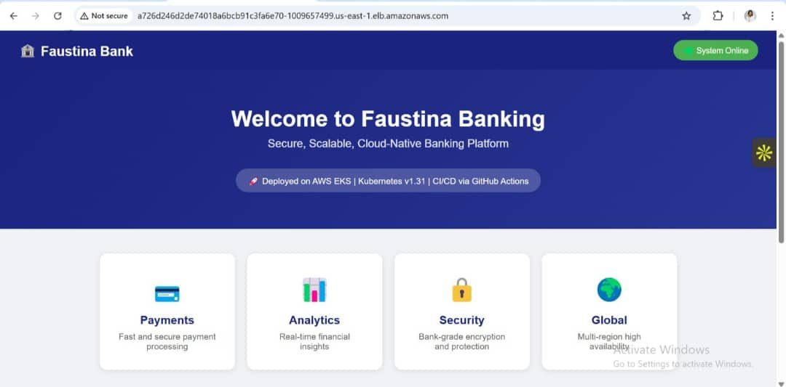
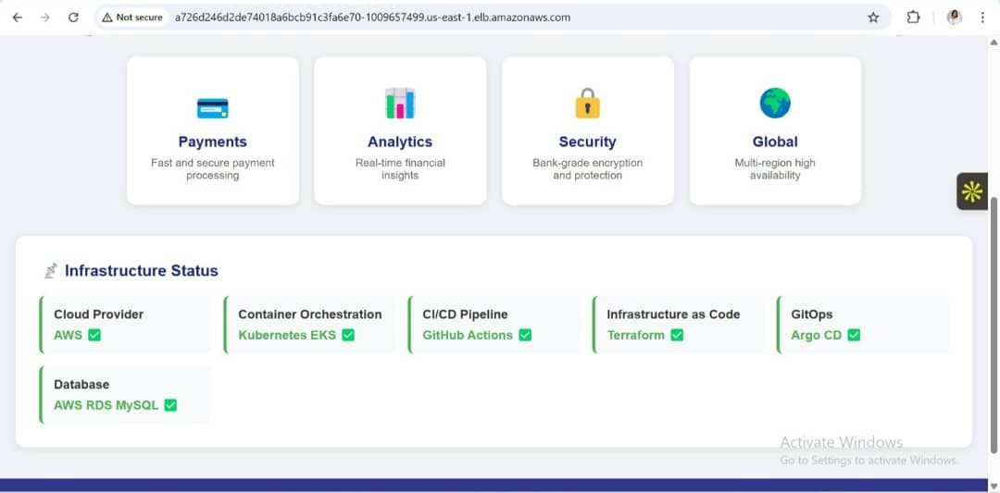
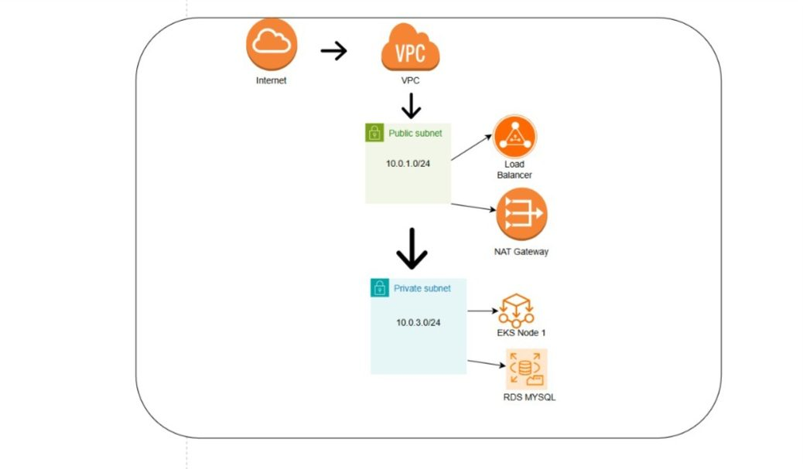
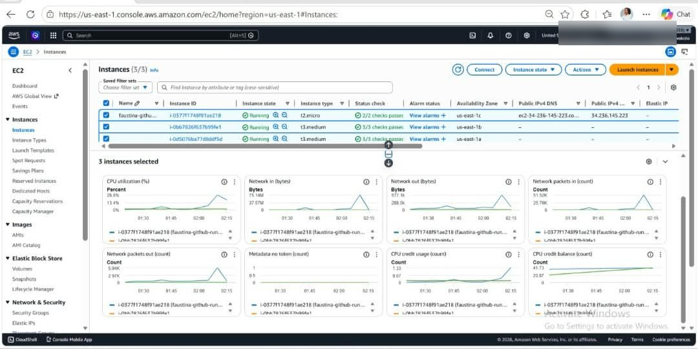

The starting point
The programme capstone was a banking application split into three tiers. I built and deployed my own version, Faustina Bank, on AWS, so that the whole path from code to a running site was something I had done myself.
Goal: Push a change to Git and have it built, delivered and running on Kubernetes without manual steps.
How I worked through it
Network
A VPC with a public subnet (10.0.1.0/24) for the load balancer and NAT gateway, and a private subnet (10.0.3.0/24) for the EKS node and the database.
Infrastructure as code
Terraform creates the network, the EKS cluster and RDS MySQL, so the environment can be rebuilt from the repository.
Build pipeline
GitHub Actions builds the Docker image and runs from a self-hosted runner on a small EC2 instance.
Delivery
Argo CD keeps the cluster in line with Git, so a merge is what triggers a deployment.
Verification
The app answers on the load balancer URL and its status page shows each layer as healthy.
The work, in screenshots




What I put together
- Terraform for VPC, EKS and RDS
- Dockerised web and application tiers
- GitHub Actions pipeline with a self-hosted runner
- Argo CD GitOps deployment
- Architecture diagram and status page
What this shows
- I can explain how a customer-facing product is hosted, which helps in technical calls and escalations.
- Shows the ability to carry a project from design to a live URL.